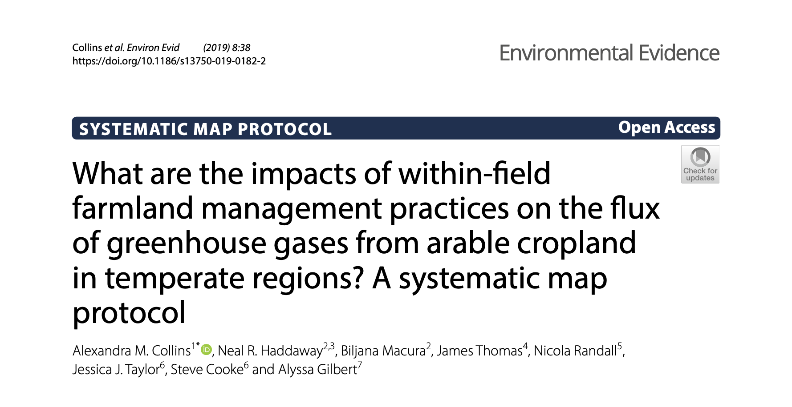
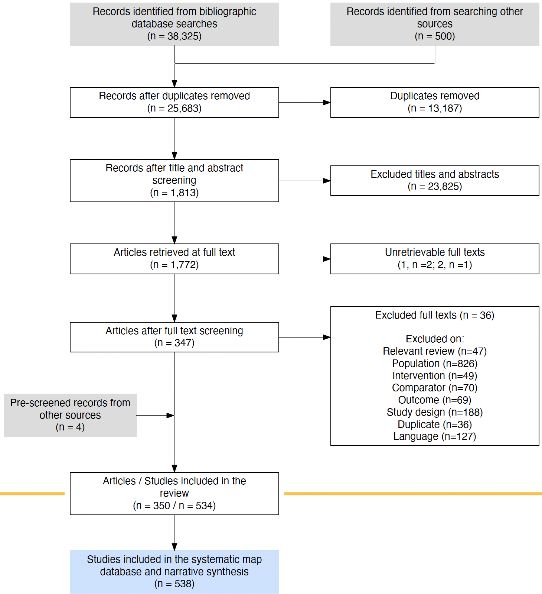

In order to collate and describe the evidence of the impact of arable farming practices on GHG emissions, we used a rigorous systematic mapping methodology following accepted gold standards in evidence synthesis published by the Collaboration for Environmental Evidence. This involved searching for, collating and cataloguing research relating to the effects of in-field arable farming practices in temperate systems on GHG emissions. Read more baout teh planned methods set out in our a priori systematic map protocol published in the journal Environmental Evidence.
Results from 6 bibliographic databases, a web-based search engine and organisational websites were combined with evidence from stakeholders. Duplicates were removed and the results were then screened for relevance at title and abstract, and full-text levels according to a predefined set of eligibility criteria (following consistency checking). Relevant studies were then coded and their meta-data extracted and used to populate a systematic map database describing each study’s settings, methods and measured outcomes. The flow diagram below shows how records were located, screened and catalogued in the map.
Click here for the results of the map.